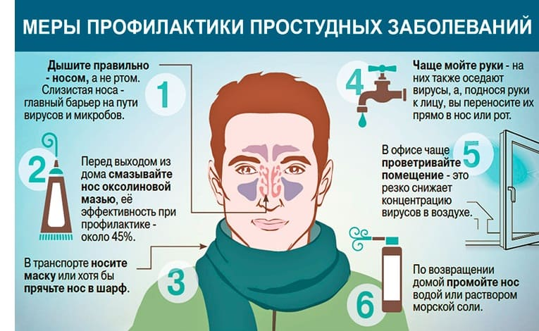
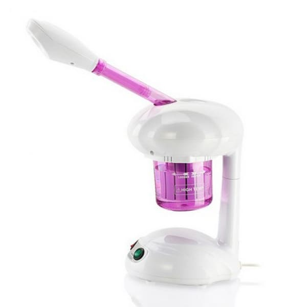
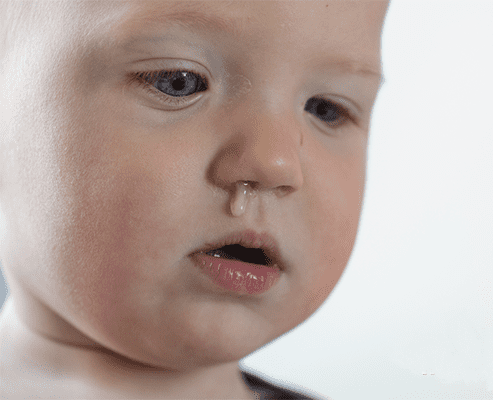
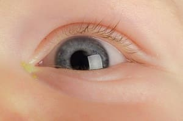
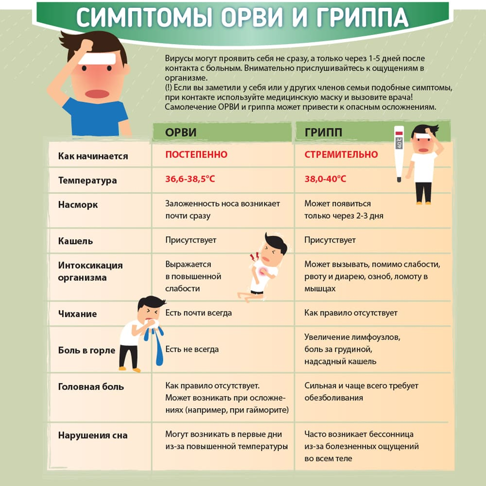

Большинство детей в первые два года шесть-восемь раз переносят простудные заболевания верхних дыхательных путей. Познакомьтесь с вызывающими их микробами получше.
Вот как предупреждать, распознавать, лечить простудные заболевания у своего ребенка и жить с ними.
Что это за загадочное заболевание, которое оставляет детей без сна, родителей без работы, а врача осаждает телефонными звонками? Простуда, в медицинских кругах именуемая острыми респираторными заболеваниями, воспалением или инфекцией верхних дыхательных путей, а также острой респираторно-вирусной инфекцией, вызывается множеством возбудителей как из числа вирусов, так и из числа бактерий. Эти микробы вызывают воспаление слизистой оболочки дыхательных путей: носа, пазух носа, ушей, горла и внутрилегочных бронхов. Уютно устроившись на этой влажной оболочке, микробы размножаются. Слизистая реагирует на нашествие вздутием и выработкой слизи, которая и вызывает шумное дыхание, характерное для простуды. Слизь продолжает интенсивно вырабатываться, и у ребенка течет из носа – теперь все ясно. Слизь также затекает внутрь, капая из носоглотки, вызывая ощущение щекотки в горле, дребезжащие звуки и кашель. Если болезнетворные микроорганизмы продвигаются дальше, в пещеры дыхательных туннелей, точно такие же вздутие и скопление слизи образуются в пазухах носа и в ушах. В конце концов эти микробы пробираются в самую глубь, во внутрилегочные бронхи, где из-за набухания слизистой оболочки сужаются дыхательные пути, и дыхание становится шумным, хриплым.
К этому времени организм горит готовностью отстоять свои позиции. Рефлексы дыхательных путей включают кашель и чихание – пушки организма, чтобы выбить ненужную слизь наружу. Обычно после кашля, чихания и подкапывания слизи в течение трех-четырех дней организм одерживает в войне победу, простуда отступает, и все в доме снова могут спать спокойно. Но иногда эти микробы не желают уходить без боев, организм мобилизует войска с более мощным вооружением, и завязывается еще более яростное сражение. Белые кровяные тельца, санитары организма, выходят на сцену и атакуют барахтающихся в слизи микробов. Побочным продуктом этого сражения становится слово из пяти букв, которое будет приводить в бешенство вашего ребенка и заставит вас потерять сон и забыть о работе. На медицинском языке это называется слизисто-гнойными выделениями; на родительском языке это сопли.
Теперь возникает проблема, поскольку сопли не так легко вытолкнуть, как их предшественника, жидкую, водянистую слизь. Они не двигаются с места, перекрывая дыхательные пути. Затем они загустевают и меняют цвет – на зеленый. Когда поднимается зеленый флаг, это означает, что другие микробы решили воспользоваться этим густым месивом – замечательной питательной средой для обитания и размножения микробов. Как сорняки, в этом липком месиве растут бактерии, и инфекция поднимает желто-зеленый флаг: зеленые сопли из носа и желтые выделения из глаз. Подавая знак, что организм мобилизует свои самые крупные иммунные орудия, повышается температура. На этом этапе в сражении наступает поворотный момент. Защитная система организма и домашние средства могут победить без посторонней помощи, и в следующие три-четыре дня простуда оставит поле боя, бросив позади лишь остаточный насморк и кашель. Или же болезнь может одержать верх, и тогда ребенок почувствует себя хуже. Генерал Мама в сопровождении Папы отправится за подкреплением. Тут врач прописывает антибиотик, который попадает прямо в цель и убивает микробов. Когда этот великий боец управляется со своей работой, выделения из носа становятся водянистыми, набухшая слизистая в дыхательных путях сужается, и ребенок снова дышит великолепно, как и его родители.
Выражение «подцепить простуду» с медицинской точки зрения корректно, хотя вернее все же было бы говорить, что простуда подцепила вас.

Вызывающие острые респираторные заболевания микробы передаются воздушно-капельным путем, что означает следующее: они путешествуют на микроскопических водяных шариках, выбрасываемых в воздух при кашле или чихании, чтобы их вдохнул другой человек, находящийся на достаточно близком для передачи простудных заболеваний расстоянии. Эти капельки и их микропассажиры также путешествуют с руки на руку.
Поэтому мы можем не только подцепить простуду, но и в буквальном смысле подхватить ее. Малыш трет руками свой сопливый нос, а затем берет своей липкой рукой за руку малыша В, который потом трет свой нос, и вот микробы нашли себе новый дом в носу, чтобы начать еще одно нашествие, на новые дыхательные пути. Вот почему мудрая бабушка всегда настаивала на том, чтобы ребенок, у которого течет из носа, мыл свои руки и прикрывал нос и рот платком, когда кашляет и чихает. Но бабушка ошибалась, когда утверждала, что простуда случается из-за сквозняков, замерзших ног, непокрытой головы или оттого, что ребенок не ест овощи.
Если вчера ваш ребенок играл с чихающим другом, а сегодня начал кашлять, ошибочно считать, что его заразил этот друг. Большинству микробов, вызывающих простуду, требуется как минимум два—четыре дня от проникновения в организм до симптомов; это инкубационный период. Вспоминайте, где ваш ребенок играл три-четыре дня назад.
После шести—восьми простудных заболеваний, перенесенных в первые два года, иммунитет у ребенка становится более крепким, а посещения врача и пропущенные рабочие дни бывают все реже.
Будьте готовы к тому, что зимой острые респираторные заболевания учащаются, с ноября по февраль. Ругать холодную погоду не стоит. Более правдоподобным объяснением этого факта является то, что дети зимой скапливаются в небольших помещениях, ближе друг к другу, и остаются в помещениях дольше, а воздух здесь суше и зимой застаивается (особенно при центральном отоплении). А еще, может быть, вызывающие простуду микробы любят забегать в дома погреться со студеной улицы.
мимо насморка, в некоторых случаях простуда протекает на фоне незначительного повышения температуры тела, генерализованной боли (когда ломит все тело), слезотечения, диареи и плохого общего самочувствия.
Большинство вирусов вежливо уходит через три-четыре дня, оставляя после себя лишь небольшой насморк и весело бегающего малыша. Иногда, однако, простуда перерастает в более тяжелые воспалительные процессы, требующие более интенсивного лечения.
• Почаще промывайте нос.
• Научите ребенка сморкаться в платок.
• Научите ребенка прикрывать нос и рот при кашле и чихании, повернувшись к плечу: покажите ему, как нужно поворачивать голову в сторону плеча, одновременно поднимая руку, чтобы закрыть лицо, вместо того чтобы закрывать нос и рот ладонями.
Если ребенок будет кашлять в плечо, он заразит меньше людей, чем если будет кашлять в ладони.
• Мойте ребенку руки после того, как он вытрет нос или покашляет.
• При простуде не прижимайтесь носом к носу.
• Отучайте ребенка тереть нос и глаза при простуде.
По большей части дискомфорт при простуде вызывается густой слизью, перекрывающей узкие дыхательные пути. Точно так же, как вода в пруду застаивается и становится питательной средой для всевозможных организмов, так же и слизистые выделения у детей. Выработанный слизистой оболочкой секрет, попавший в пазухи носа и в среднее ухо, становится питательной средой, привлекающей бактерии, которые здесь размножаются и в результате вызывают воспаление бактериального характера.
Лечение, таким образом, нацелено на продвижение выделений через закупоренные дыхательные пути. Запомните золотое правило лечения простуды: нужно сделать так, чтобы слизь постоянно была жидкой и двигалась. Вот как этого добиться.
Промывайте нос. Поскольку маленькие дети обычно не способны почистить свой собственный нос, за них это делать должны вы. Действуйте, как описано в тексте в рамке на следующей странице.
Научите ребенка сморкаться. Покажите ребенку, как надо задувать свечу, а затем продемонстрируйте ему, как делать это носом, и скажите: «Именно так люди высмаркиваются». Затем высморкайтесь сами и дайте ребенку при этом подержать платок перед вашим носом. Теперь он делает то же самое, и вы высмаркиваетесь вместе. «Дуй, а не фыркай!» – вот лозунг клуба чистых носов, но дуть нужно осторожно.
Если выдыхать слишком резко, это может загнать выделения в пазухи носа и затянуть болезнь. Некоторые специалисты считают даже, что лучше, если ребенок потихоньку втягивает выделения назад, в горло, а затем выталкивает их кашлем, нежели дует и загоняет слизь в пазухи. Но маленькие дети редко откашливают слизь. Вместо этого они проглатывают ее, и их желудок восстает. Рвота вслед за кашлем – нередкое явление у детей.
Сухой воздух и узкие дыхательные пути плохо уживаются в одной комнате. Дыхательные пути усеяны крошечными волокнами, так называемыми ресничками, которые несут на себе слой слизи. Эта защитная система действует подобно миниатюрным приводным ремням, удаляя из вдыхаемого воздуха пыль и другие частицы.
Сухой воздух, особенно при центральном отоплении, действует подобно губке, вытягивая влагу изо всех частей организма – кожи, волос и в особенности из дыхательных путей. В результате сухой воздух останавливает эти приводные ремни. Слизь скапливается сгустками и служит питательной средой для бактерий; в результате мы имеем отекшие, заложенные дыхательные пути, и нам трудно дышать.

Если давать ребенку в течение дня как можно больше жидкости и включать вапоризатор (испаритель), когда он спит, это поможет сделать выделения более жидкими и облегчит выведение их наружу при чихании или кашле. Или возьмите ребенка в ванную комнату, закройте дверь, включите горячий душ и примите вместе паровую ванну. Пар откупоривает дыхательные пути и помогает выделениям вытечь.
Совсем маленькие дети редко когда умеют высмаркивать свой нос. Прочищать им заложенные носовые ходы должны вы. Вот как следует промывать нос.
Купите солевой спрей для носа (особый состав из воды с солью, отпускаемый в аптеках без рецепта). Держите ребенка вертикально. Брызните по одной струе в каждую ноздрю. Затем на одну минуту положите ребенка так, чтобы голова была ниже тела. Это позволяет соленой воде растворить густые выделения и стимулирует ребенка чихать, тем самым выгоняя их в переднюю часть носа, где вы уже поджидаете их, вооружившись старым добрым аспиратором. Будьте готовы к тому, что ребенку совсем не понравится такое вторжение в его нос; но маленькие носики нужно прочищать, чтобы они могли дышать, особенно во время кормления.
Или же вы можете приготовить солевые капли сами. Положите щепотку соли (не более 1/4 чайной ложки) в стакан теплой водопроводной воды (емкостью 240 мл). Пластмассовой пипеткой закапайте по нескольку капель в каждую ноздрю и далее действуйте, как описано выше.
Никогда не отпускайте резиновый кончик пипетки или пульверизатор, пока они еще находятся в носу у ребенка. Иначе выделения из носа попадут в пипетку или флакон, и их содержимое будет заражено. Промывайте тот участок пипетки и пульверизатора, который соприкасался с носом. Поскольку они имеют особый состав, капли, которые продаются в аптеках, оказывают более мягкое действие на слизистую носовых ходов, чем капли для носа домашнего приготовления.
Домашний набор для ухода за носом (слева направо): грушевидный аспиратор; покупной солевой спрей для носа; медицинская пипетка; солевой раствор домашнего приготовления (щепотка соли на стакан воды)
Чтобы воспользоваться аспиратором, сдавите резиновую грушу, затем введите пластиковый или резиновый кончик в нос ребенка достаточно глубоко, чтобы не было зазоров, и постепенно разжимайте пальцы, так чтобы вместе с воздухом в грушу втянулись и слизистые пробки. Проделайте это два-три раза с каждой ноздрей или столько, сколько потребуется и сколько будет терпеть ребенок. После каждого использования набирайте в аспиратор мыльную воду и затем тщательно промывайте чистой водой. В аптеке вы можете купить аспираторы различной формы.
РЕЦЕПТ ОТ ПРОСТУДЫ ОТ ДОКТОРА СИРСА:
Промывание носа + пар = облегченное дыхание
Поддержание в помещении, где ребенок спит, необходимой влажности даст дыхательным путям влагу, в которой они нуждаются. Аллергологи предупреждают, что относительная влажность более 50 % может способствовать размножению плесени и пылевых клещей, тем самым вызывая аллергию, тогда как специалисты, занимающиеся болезнями органов дыхания, доводят до сведения, что влажность менее 25 % может привести к закупорке дыхательных путей. Таким образом, относительная влажность 30–50 % идеальна для комнаты ребенка. Измеряйте в спальне влажность, пользуясь гидрометром, который продается в хозяйственном магазине.
Хотя для увлажнения воздуха мы предпочитаем вапоризаторы, другие приборы, увлажнители, если правильно ими пользоваться и содержать в чистоте, также могут выполнять эту работу неплохо. Вот некоторые советы по эксплуатации вапоризаторов (испарителей) и увлажнителей:
• Поскольку вапоризаторы вырабатывают горячий пар, они несут угрозу ожогов. Ставьте вапоризатор в недоступное для ребенка место.
• Промывайте вапоризаторы и увлажнители согласно рекомендациям производителя как минимум раз в неделю; предпочтительно чаще. Хороший раствор для мытья получается из половины стакана хлорной извести на четыре литра воды (а лучше использовать тот раствор, который рекомендует производитель). После мытья тщательно ополаскивайте прибор.
• Ежедневно меняйте воду и просушивайте вапоризатор, когда не пользуетесь им.
• Используйте ту воду (дистиллированную или водопроводную), которую рекомендует производитель.
• Ставьте вапоризатор на расстоянии примерно 60 см от своего ребенка и направляйте струю пара в сторону носа ребенка для более концентрированной влажности.
• Применение лекарственных средств: можно купить препараты, содержащие эвкалиптовое масло, и добавлять их в вапоризатор (но не в увлажнитель), чтобы открыть дыхательные пути. Если их не рекомендовал ваш врач, детям они не обязательны.
• В крайнем случае вы можете соорудить собственный вапоризатор, закрыв дверь ванной комнаты и включив горячий душ.
В большинстве случаев вызванная вирусами простуда требует только тщательного ухода за носовой полостью, обильного питья и времени. Бежать в аптеку или к врачу вовсе не обязательно. Но иногда простуда не желает уходить (сопли густеют), и вы встаете перед решением, вести или не вести ребенка к врачу. Вот как определить.
Насколько сильно простуда беспокоит ребенка? Может быть, ребенок весел, радостно играет, хорошо ест и спит, и у него почти или совсем нет температуры? Такая простуда лишь доставляет беспокойство громкими звуками, производимыми ребенком, и требует лишь лечения на дому да ваших ласковых рук.
Что выходит из носа ребенка? Если выделения прозрачные и водянистые (течет из носа), беспокоиться не стоит. Если выделения становятся все более и более густыми, желтыми или зелеными (появляются, что называется, сопли) и остаются такими большую часть дня, это может быть причиной для большего беспокойства, особенно на фоне повышения температуры и капризности.
Струя влажного воздуха, которую вы вдыхаете, способна разжижать в носу выделения и облегчать дыхание, но не всякий туман чист и безвреден.
Увлажнители и испарители (вапоризаторы) вырабатывают туман тремя разными способами: колебанием (ультразвуком), выдуванием или разбрызгиванием (импеллеры) и кипячением (вапоризатор). Вот что вам следует знать об этих устройствах.
Увлажнители дают холодный туман. Новейшие модели совершенно бесшумные, ультразвуковые, которые используют высокочастотный звук для рассеивания воды в виде тумана. Они очищают воздух (убивают бактерии и плесень), но не всегда обеспечивают его безопасность для здоровья. Новые исследования выявили, что этот ультрамелкий туман может также содержать рассеянные по воздуху загрязнения, содержащиеся в изобилующей минеральными веществами водопроводной воде. Эти мельчайшие частички (например, асбест, свинец и др.) могут попадать в организм при дыхании и раздражать нижние дыхательные пути. Эту потенциальную опасность можно свести к минимуму, купив ультразвуковой увлажнитель со встроенным фильтром для частиц или сменным деминерализующим картриджем или же используя дистиллированную воду.
Увлажнители типа импеллера обычно не такие бесшумные, как ультразвуковые, и в этих увлажнителях обычно скапливаются бактерии и плесень, которые затем рассеиваются аппаратом по воздуху. Некоторые более современные модели увлажнителей-импеллеров имеют фильтры.
Хуже всех старые увлажнители с вращающимся барабаном и котлом воды, в которых вода застаивается. Мы не рекомендуем использовать этот тип.
Как говорит название, испарители вырабатывают горячий пар и подают более концентрированный туман на меньшую площадь. Поскольку вода внутри кипит, образующийся пар убивает бактерии и плесень, а минеральные вещества никогда не выходят за пределы аппарата. При большинстве респираторных заболеваний для увлажнения дыхательных путей вапоризаторы предпочтительнее, чем увлажнители. Вапоризатор позволяет вам отключить центральное отопление, тем самым снизив его высушивающий эффект. Дающий горячий туман вапоризатор способен поддерживать воздух в небольшой комнате, такой как детская, теплым, одновременно не давая пересыхать маленьким носикам.

Маленький секрет: не дайте выделениям, которые вы обнаружили утром при пробуждении, провести себя. Это обычное явление даже при простуде, протекающей легко, поскольку за ночь выделения успели загустеть. Промойте нос и посмотрите, не станут ли выделения снова прозрачными.
Зеленые выделения не обязательно означают бактериальную инфекцию. Многие вирусные инфекции проявляются зелеными выделениями из носа, которые могут продолжаться семь и более дней.

Посмотрите, как ведет себя ребенок. Если ребенок в хорошем настроении, температура не очень высокая или ее нет совсем, вам не обязательно обращаться к врачу, даже если из носа текут зеленые сопли.
Загляните ребенку в глаза. Глаза – зеркало здоровья. Если глаза у ребенка по-прежнему яркие, беспокоиться не о чем. А вот если они потускнели, вам стоит насторожиться. Если из уголков глаз ребенка большую часть дня (а не только утром) сочится желтое вещество, это повод для беспокойства.

ОСОБОЕ ПРИМЕЧАНИЕ. Гноящиеся глаза на фоне простуды всегда заслуживают осмотра врача. Это признак возможного воспаления пазух носа или воспаления уха. Выделения из глаз на фоне покраснения глазных яблок при отсутствии насморка могут быть конъюнктивитом, а вовсе не простудой. Вот почему мы придерживаемся правила не лечить гноящиеся глаза по телефону, если у ребенка простуда.
В каком направлении развивается болезнь. С первого по третий день из носа вовсю течет, а ребенок играет как ни в чем не бывало. На пятый день сопли загустевают и ребенок притихает; появляются и другие симптомы: повышение температуры, капризность и изможденный вид. Срочно отправляйтесь с ребенком к врачу. Без осложнений простуда проходит за три—пять дней; если наблюдается постепенное ухудшение состояния, это повод для тревоги.
Другие признаки и симптомы. Обычная простуда по большей части просто вызывает неудобство, поскольку заложенный нос препятствует дыханию. Как только нос прочищен, ребенок должен чувствовать себя лучше. Но если ребенок капризничает, у него густые выделения из носа, высокая температура, бессонница, боль в горле, боль в глазах, сильный кашель или припухшие, гноящиеся глаза – это признаки того, что назревает нечто большее, чем простая простуда.

Когда врач осматривает вашего ребенка с острым респираторным заболеванием, он прежде всего пытается определить, вызвано ли оно вирусами, и в этом случае пройдет само безо всяких лекарств, или же бактериями, и заслуживает лечения антибиотиками. Следующий вопрос: если это воспаление, вызванное бактериями, где оно локализуется – в носу, пазухах носа, горле, ушах или груди? Если ни в одном из этих укромных мест врач не найдет признаков вызванного бактериями воспалительного процесса и если ребенок чувствует себя не слишком плохо, врач посоветует вам продолжать домашнее лечение, дав наставление: «Позвоните мне, если ребенку станет хуже». Не забывайте этот совет. Простуда часто перекидывается на пазухи носа, уши или грудь, а это требует изменения диагноза и лечения.
Разговаривая с врачом по телефону или у него в кабинете, держите наготове следующую информацию о болезни своего ребенка:
• Когда началась простуда?
• Каково ее течение? Улучшается состояние, ухудшается или остается неизменным?
• Как сильно заболевание влияет на сон ребенка, его поведение и аппетит?
• Каковы выделения из носа? Прозрачные они и жидкие или же густые, желтые, зеленые и вязкие?
• Имеются ли другие признаки и симптомы, такие как повышение температуры, выделения из глаз, кашель, боль в ухе, бледность, вялость, боль в горле, вздутые лимфатические узлы, сыпь, неудержимая рвота или сонливость?
• Веселый ребенок + прозрачные выделения из носа = нет причин для беспокойства.
• Все более грустный ребенок + все более густые выделения из носа (сопли) = время идти к врачу.
Никогда не делайте вывод, что состояние ребенка не ухудшается, без врача.
И, наконец, обязательно скажите, насколько болен ребенок по вашему мнению и насколько вы обеспокоены. Врачи, особенно педиатры, относятся к родителям с сильной интуицией как к помощникам в постановке диагноза и лечении заболевшего ребенка. Если во время осмотра вы будете комментировать заболевание, это поможет врачу поставить правильный диагноз. Иногда случается, что ребенок оживляется и становится веселым лишь на время пятиминутного посещения врача, а до него и после чувствует себя очень плохо; в этом случае ваш врач может не увидеть, насколько ребенок болен на самом деле. Помогут ваши слова.
Острые респираторные заболевания заразны на очень ранней стадии, когда вы еще не успели понять, что ребенок болен. Главное правило: чем дольше ребенок болеет, тем менее он заразен. Если у вашего ребенка из носа течет прозрачная жидкость и нет температуры, если он не ведет себя апатично и просто создает лишний шум чиханием и кашлем, редко имеется необходимость держать его дома. Однако если ваш ребенок безостановочно кашляет, у него текут густые сопли из носа и желтые выделения из глаз, если у него поднялась температура и он выглядит нездоровым, подержите его три-четыре дня вдали от других детей. Если вы водите его в садик, где против насморка ничего не имеют, почаще мойте ребенку руки и научите его не брать чужие игрушки и не делиться своими игрушками, которые дети часто берут в рот.
Марта, Уильям, Роберт, Джеймс Сирс"Ваш малыш от рождения до двух лет"